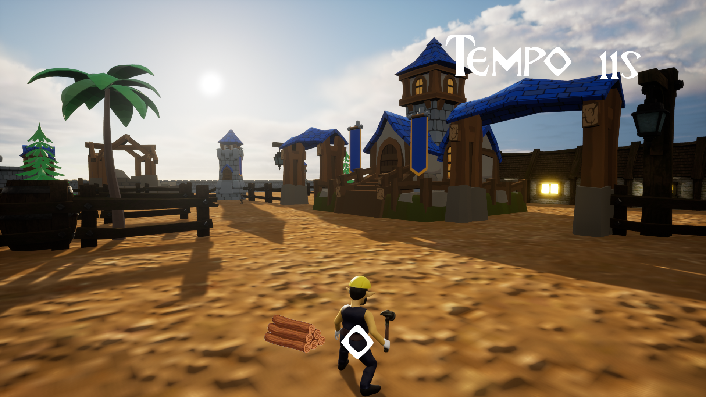

Building in Mayhem
Programador · Game Jam 48hBuilding in Mayhem é um jogo de construção em 3D com elementos cartunescos. Construa casas em um local sitiado, enquanto corre contra o tempo e se defende de nativos malvados que querem arruinar seu trabalho! Os inimigos não causam dano ao jogador, porém roubam seus recursos! Cuidado!